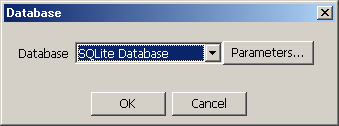

Select [File] in the menu bar and then select [Database] from the drop down menu.
The Database dialog appears.
The database specified in this dialog contains all the peak matrix settings and results that appear in the Quantitation dialog.
The Database dialog can also be displayed by clicking the
 icon in the toolbar.
icon in the toolbar.
Click [Parameters] to modify the settings.
Click [OK].